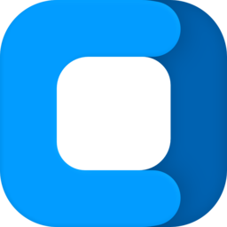

Sistema de Design, Tokens, Fundo Decorativo e Componentes
O fundo possui 30 linhas sinusoidais suaves desenhadas com destaque na cor primária de accent, com brilho ambiente gradiente de profundidade.
Selecione uma cor para testar o comportamento dos tokens em tempo real:
Atualiza `--c-primary` e recalcula gradientes do fundo senoidal.
Instrução auxiliar de preenchimento.
Aguarde o processamento em segundo plano.
PDFs validados e salvos com sucesso.
Com efeito glassmorphic de desfoque de fundo e bordas elevadas.
Este cartão utiliza variáveis de elevação do design system do Contracto, adaptando-se perfeitamente aos modos claro e escuro.